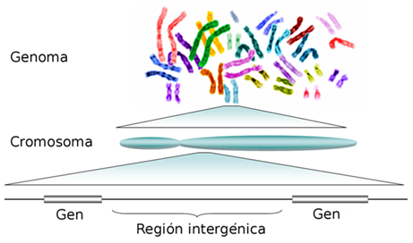
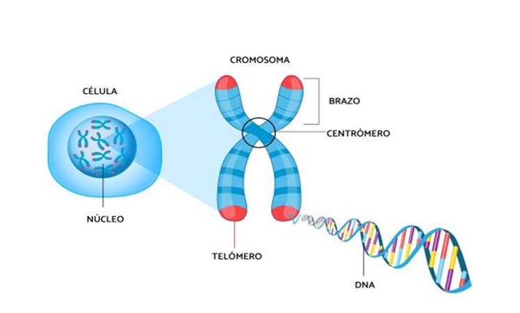
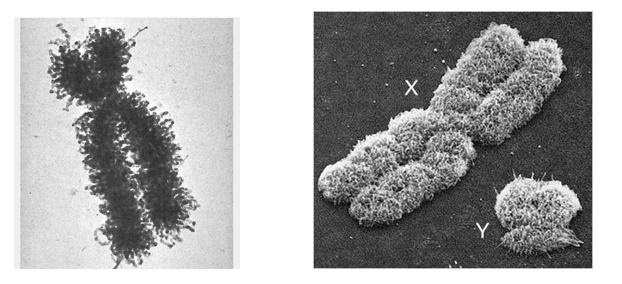
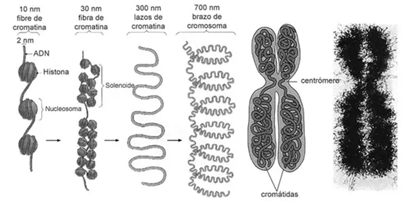
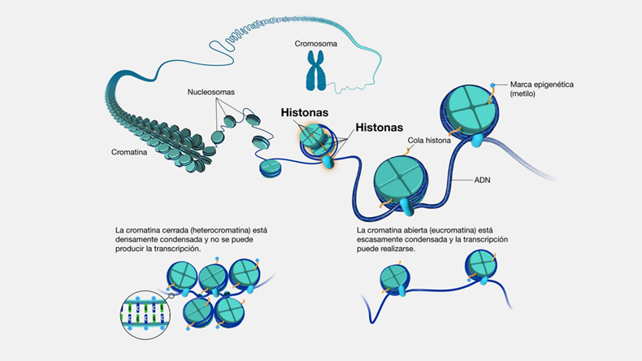
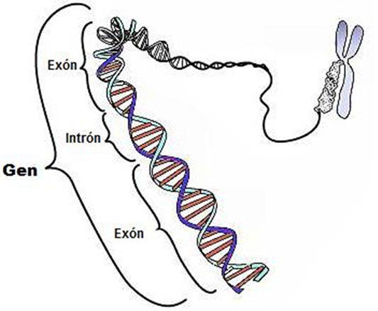
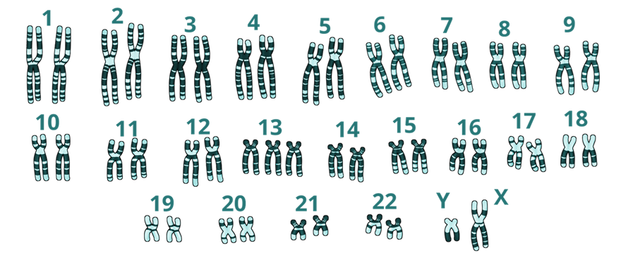
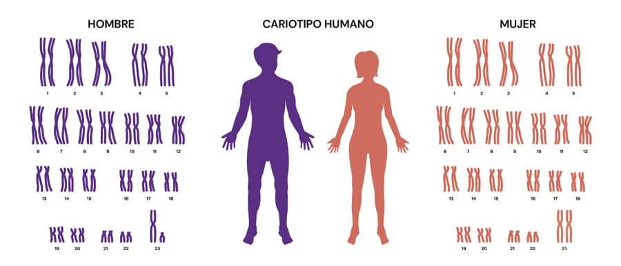
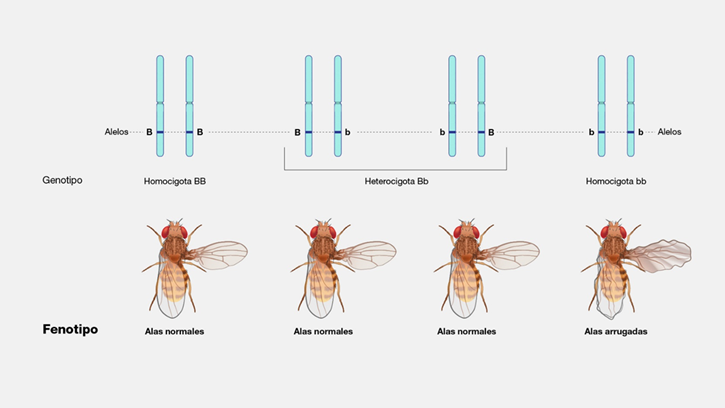
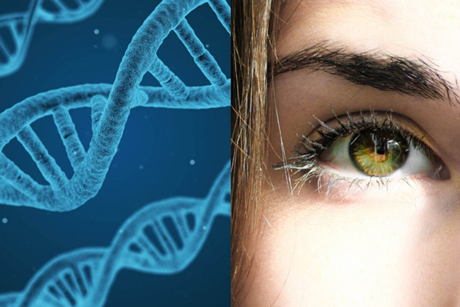

Secuenciación de ADN y ARN. Genoma
Introducción
La capacidad de leer y comprender la información genética ha transformado la biología en una ciencia cuantitativa y de datos. La secuenciación de ADN y ARN no solo ha permitido desvelar la estructura íntima de los genomas, sino que también ha abierto el camino a la medicina personalizada, a la biotecnología moderna y a una comprensión más profunda de la evolución.
Genética
La genética es la disciplina que estudia la herencia y la variación en los organismos vivos. Desde Mendel, con sus experimentos en guisantes, hasta los actuales enfoques de secuenciación masiva, la genética ha pasado de ser una ciencia basada en la observación de rasgos fenotípicos a convertirse en una disciplina de datos masivos. En su núcleo se encuentra la idea de que la información biológica se codifica en secuencias de nucleótidos, que determinan la síntesis de proteínas y, en última instancia, los fenotipos.

Genoma
Cromosomas
Los cromosomas son las unidades físicas de organización del material genético. En los eucariotas, cada cromosoma está constituido por una larga molécula de ADN asociada a proteínas histonas, formando la cromatina. Su estructura no solo garantiza la compactación necesaria para alojar grandes cantidades de información, sino que también regula la accesibilidad de los genes a la maquinaria celular. Los cambios estructurales en los cromosomas, como inversiones, deleciones o duplicaciones, son una fuente importante de variación y, en ocasiones, de enfermedad.

Cromosoma. Estructura

Cromosoma. Estructura microscópica

Cromatina

De la comatina al cromosoma
Genes: estructura y funcionalidad
Los genes son secuencias definidas de ADN que codifican información para la síntesis de proteínas o de ARN funcionales. Constan de regiones reguladoras, exones (que se traducen en proteína) e intrones (que son eliminados en el proceso de maduración del ARN). Su funcionalidad depende no solo de la secuencia, sino también del contexto epigenético y de la interacción con redes de regulación génica. El estudio de la organización y expresión de los genes constituye la base para comprender cómo un genotipo se traduce en fenotipo.

Estructura del gen
Cariotipo
El cariotipo representa el número y la morfología de los cromosomas de un organismo. En humanos, el cariotipo normal consta de 46 cromosomas (23 pares). Su análisis permite detectar anomalías cromosómicas como la trisomía 21 (síndrome de Down) o las deleciones que caracterizan a ciertos tipos de cáncer. Hoy en día, el cariotipo clásico basado en tinciones se complementa con técnicas de hibridación fluorescente y secuenciación genómica que permiten un nivel de resolución sin precedentes.

Cariotipo

Cariotipo Humano
💡 Detalles
El tamaño de los cromosomas depende de la cantidad de ADN que contienen.
Los cromosomas están ordenados en el cariotipo de mayor a menor tamaño (del 1 al 22).
El cromosoma 1 es el más grande (~249 millones de pares de bases, con más de 2000 genes).
El cromosoma 21 es uno de los más pequeños (~48 millones de pares de bases, con unos 200–300 genes).
Cada cromosoma humano mide, si lo estiramos, entre ~1,5 cm (cromosoma 21) y ~8,5 cm (cromosoma 1).
Todo el ADN de una célula mide más de 1 metro.
Genotipo y fenotipo
El genotipo se refiere al conjunto de genes de un organismo, mientras que el fenotipo corresponde a la manifestación observable de esos genes, resultado de la interacción entre la información genética y el ambiente. La secuenciación de genomas completos ha revelado que la relación entre genotipo y fenotipo es compleja, con fenómenos como la pleiotropía (un gen que influye en múltiples rasgos) o la penetrancia incompleta. Este es uno de los campos donde la bioinformática juega un papel clave, integrando datos genómicos, transcriptómicos y ambientales.

Genotipo y Fenotipo

Genotipo y Fenotipo
💡 El ADN en cifras
- Cada célula del cuerpo humano (con la excepción de los glóbulos rojos) contiene una secuencia de ADN de 3.200 millones de letras de longitud , es decir, 2 metros de ADN. Y es que un trozo de ADN de 1 mm de longitud contiene una secuencia de pares de bases de más de 3 millones de letras.
Es posible escribir tantas instrucciones con sólo 4 letras, tal y como explica Joel Levy en 100 analogías científicas:
- Las proteínas están compuestas por 20 aminoácidos diferentes, así que lo que se necesita es un código capaz de cifrar al menos 20 mensajes (o codones) diferentes. Como cada letra presenta cuatro opciones, las secuencias de dos bases sólo permitirían 16 (4x4) palabras de dos letras, o codones. Pero si las secuencias tienen tres bases, es posible transmitir 64 (4x4x4) codones distintos, más que suficiente si se quieren especificar 20 aminoácidos.
- Para asimilar la cantidad de letras que componen el genoma humano, debemos imaginarnos tecleando en el ordenador 60 palabras por minuto, 8 horas al día... durante 50 años. Y es que el ADN de una simple ameba unicelular ya contiene hasta 400 millones de bits de información genética, lo suficiente para escribir 80 libros de 500 páginas cada uno.
- El ADN puede preservarse durante mucho tiempo: las muestras más antiguas encontradas hasta el momento corresponden a plantas, mamuts y otros animales siberianos de hace 400 mil años.
- Las sustancias químicas y otros agentes atacan y dañan con frecuencia el ADN de una célula humana a un ritmo, en términos generales, de 10.000 veces al día. Alteraciones en un solo gen son las causantes de entre 3.000 y 4.000 enfermedades hereditarias.